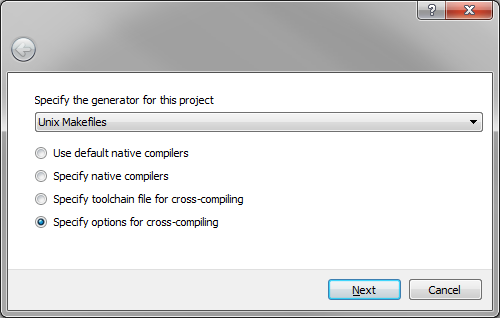
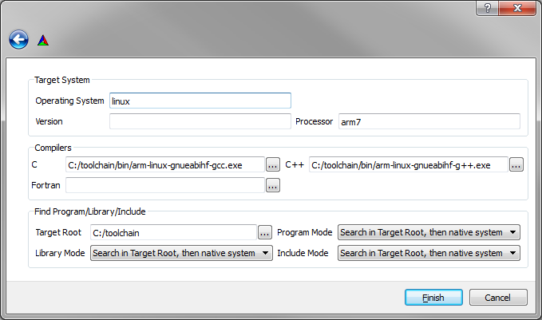

Building 4diac FORTE on Raspberry-SPS
Introduction
The Raspberry-SPS consists of a Raspberry-PI which is a low-cost embedded system with an ARM processor @700Mhz and 512MB RAM and additional modules such as digital and analog modules.
This tutorial shows how to cross-compile 4diac FORTE for the Raspberry-SPS.
For a general introduction to building 4diac FORTE, see the installation tutorial.
Preparation
- Download the proper toolchain for your operating system where you plan to build 4diac FORTE gcc-linaro-arm-linux-gnueabihf.
The path to your downloaded toolchain has to be short e.g., C:/toolchain for Windows.
- Start CMake-gui, choose the 4diac FORTE source code folder and build binaries, e.g. forte/bin/raspberrySPS and press the configure button.
A new window will be opened. As generator, choose Unix Makefiles and check the Specify options for cross compiling radio button.

- Configure the cross compiling options as it is illustrated within the following image and press the finish button.

- Choose posix as FORTE_ARCHITECHTURE and check FORTE_MODULE_Raspberry-SPS as well as other desired modules.
- Press the Configure button until nothing remains red. Afterwards press the Generate button.
- The desired make files have been generated.
Execute make within a console and find the 4diac FORTE executable in forte/bin/raspberrySPS/src
$ cd forte/bin/raspberrySPS
$ make
- Copy the 4diac FORTE executable to the Raspberry-SPS and start 4diac FORTE with:
$ ./forte
Where to go from here?
If you want to build a 4diac FORTE, here is a quick link back:
Install Eclipse 4diac
After you installed all required tools, it's time to start using them. Take a look at the following tutorials:
Step 0 - 4diac IDE Overview
If you want to go back to the Start Here page, we leave you here a fast access
Where to Start
Or Go to top